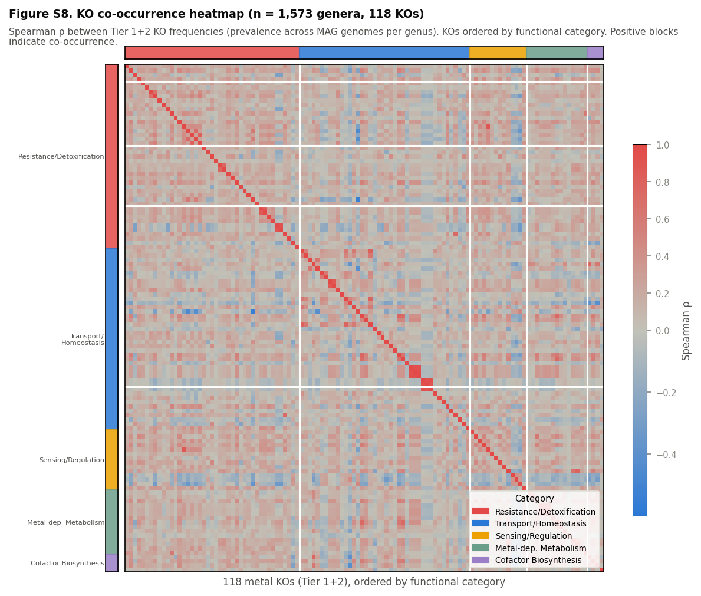

Figure S8. Tier 1+2 KO co-occurrence heatmap: Resistance and Transport KOs form distinct co-occurrence blocks.
Spearman ρ between 118 Tier 1+2 KO frequencies (prevalence across MAG genomes within each genus; n = 1,573 genera). KOs ordered by functional category (colour bars): Resistance/Detoxification (red), Transport/Homeostasis (blue), Sensing/Regulation (amber), Metal-dependent Metabolism (teal), Cofactor Biosynthesis (purple). Colour scale: blue = negative co-occurrence, red = positive. High ρ within Resistance and Transport blocks reflects shared evolutionary drivers; weak cross-block correlations demonstrate functional modularity of the metal-gene panel.
